01
Hydraulique & dessalement
Pompage, variateurs moyenne tension, continuite d'alimentation et supervision.
GIMPO / SARL GIMELEC POWER
Basee en Algerie, GIMPO est une entreprise EPC (Engineering, Procurement & Construction). Nous assurons la distribution, l'integration, l'installation et la maintenance d'equipements electriques et d'automatismes industriels pour les secteurs de l'energie, des infrastructures et de l'industrie.
Mission
En tant qu'entreprise EPC, GIMPO accompagne ses clients de l'etude a la mise en service : equipement electrique, electricite industrielle, automatisation, controle, maintenance et assistance technique. L'entreprise s'appuie sur des partenariats solides avec des fabricants mondialement reconnus.
Champs d'activite
Pompage, variateurs moyenne tension, continuite d'alimentation et supervision.
Entrainements, moteurs, demarreurs et assistance pour applications critiques.
Production, distribution, tableaux, generateurs, commandes et mise en service.
Maintenance de machines tournantes, moteurs BT/MT et diagnostic terrain.
Produits & technologies
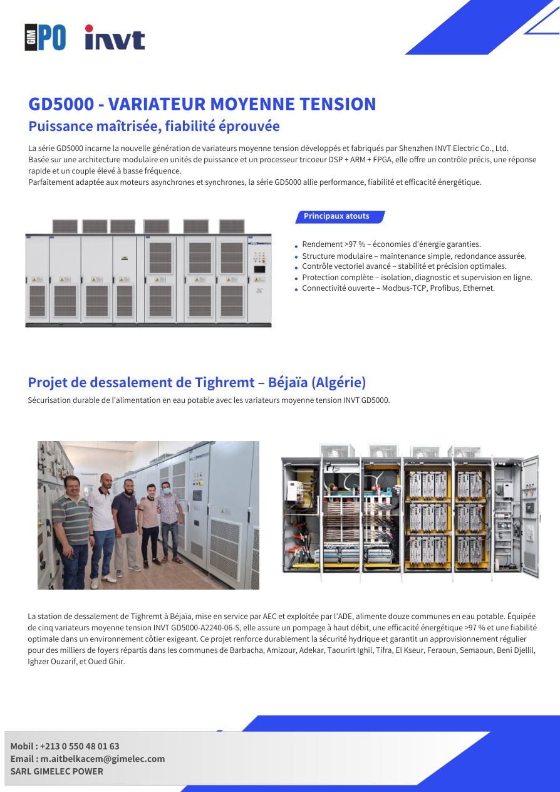
INVT GD350 / GD5000
Solutions de controle moteur pour pompes, cimenteries, energie et process industriels. Les series INVT assurent precision, efficacite energetique et communications ouvertes.

INVT UPS
UPS pour data centers, industries et infrastructures sensibles avec architecture N+X redondante, maintenance simplifiee et supervision intelligente.
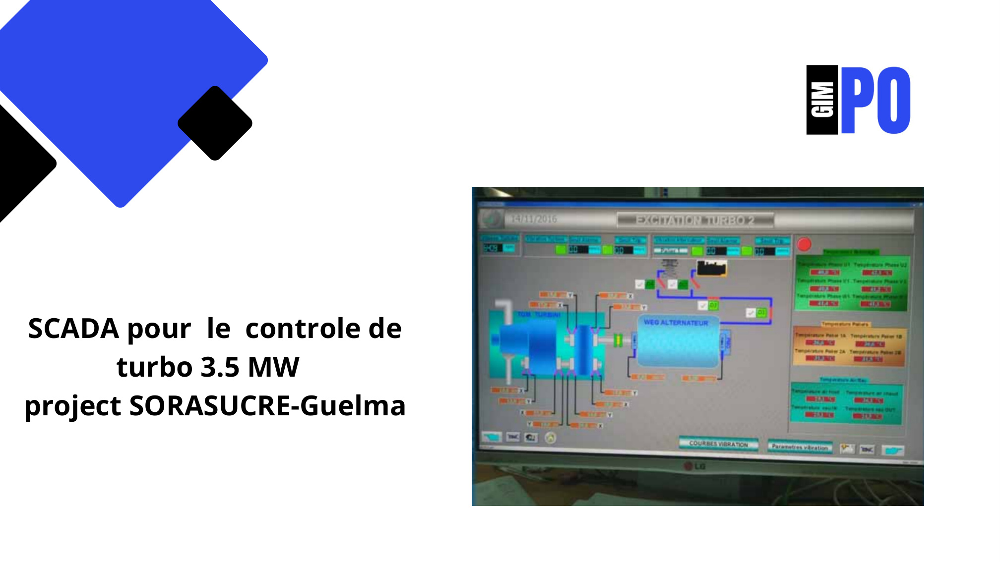
Sifang / Syfang
Integration de supervision et de controle pour installations electriques: visualisation process, suivi des alarmes, commande et diagnostic des equipements.
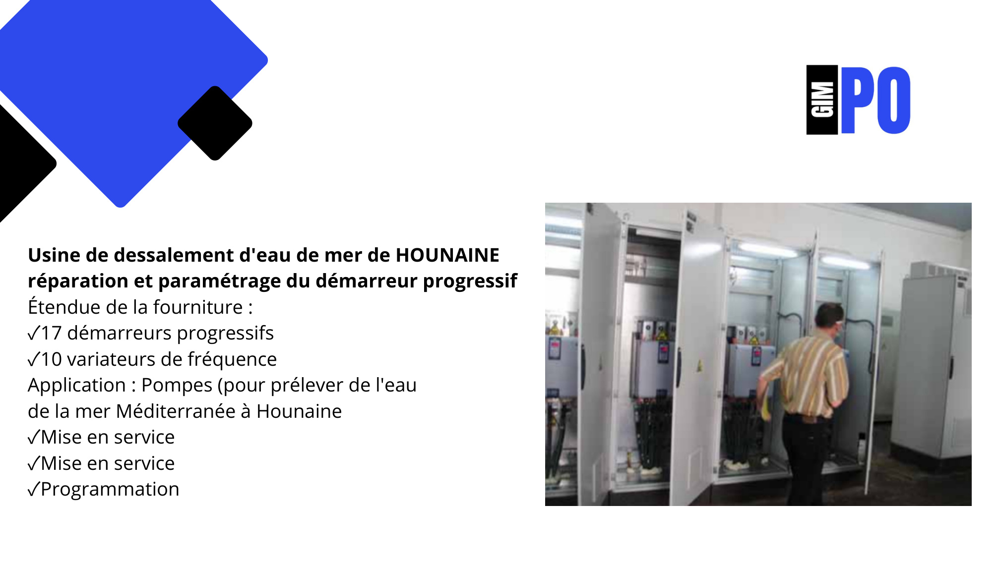
Sifang / Syfang
GIMPO intervient sur les produits Sifang, INVT et autres marques: reparation, parametrage, essais, demarrage et support terrain pour machines critiques.

LAEG
Gammes de moteurs basse tension, moteurs speciaux, moteurs universels et solutions PM Drive & Control pour applications electromechaniques et automation.
Partenaires
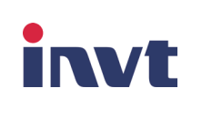
Variateurs, UPS et solutions d'automatisation industrielle.
Demarreurs progressifs, SCADA et controle des installations.
Moteurs electriques et solutions electromechaniques.
Competences
Commissioning sur site ou en atelier, parametrage, tests, demarrage et assistance client.
Moteurs BT/MT: Rebobinage stator/rotor, roulements, paliers lisses, charbons, accessoires et peinture.
Reparation, revision, parametrage, optimisation applicative et formation produits INVT.
Fabrication, installation, modification, mise en service et maintenance de tableaux electriques.
Analyse vibratoire, equilibrage dynamique, controle dimensionnel, essais et analyses techniques.
Fourniture de pieces d'origine et remise a neuf mecanique/electrique des equipements.
Engagements
References
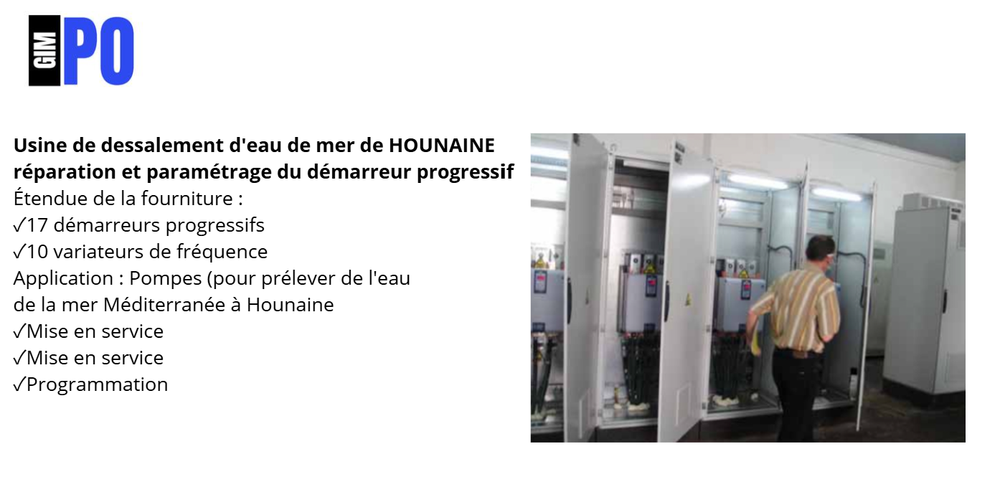


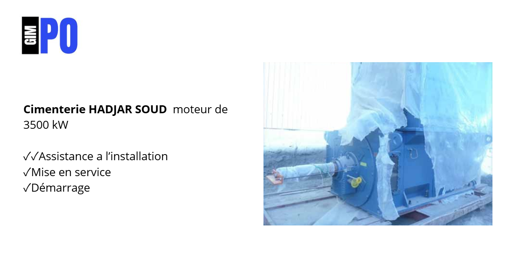
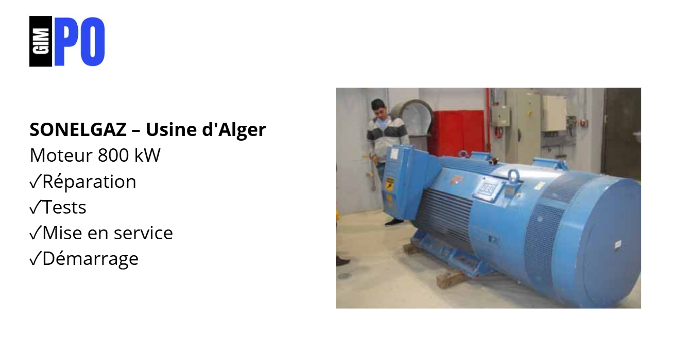
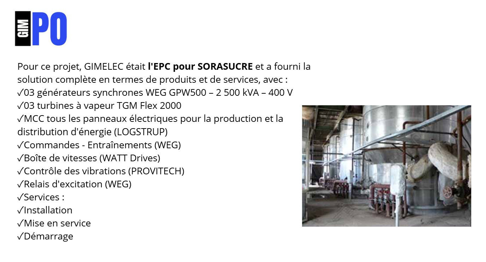
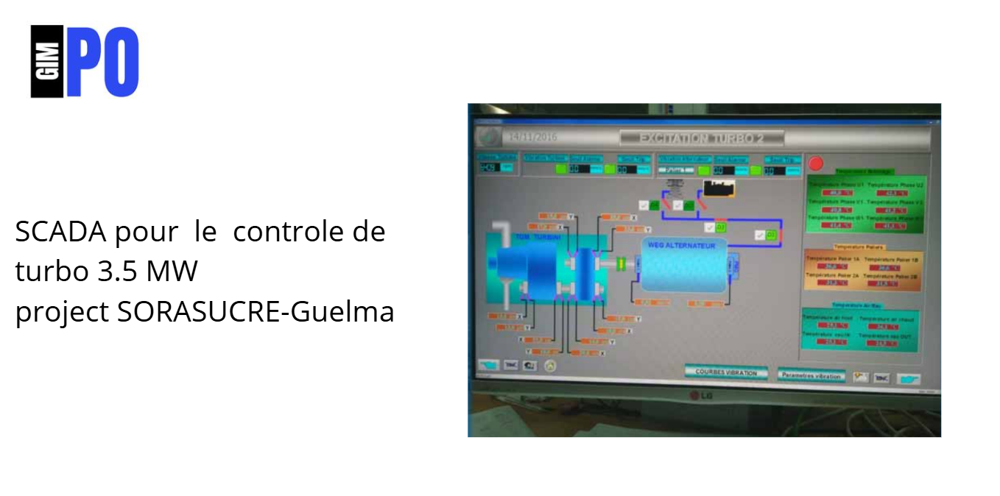
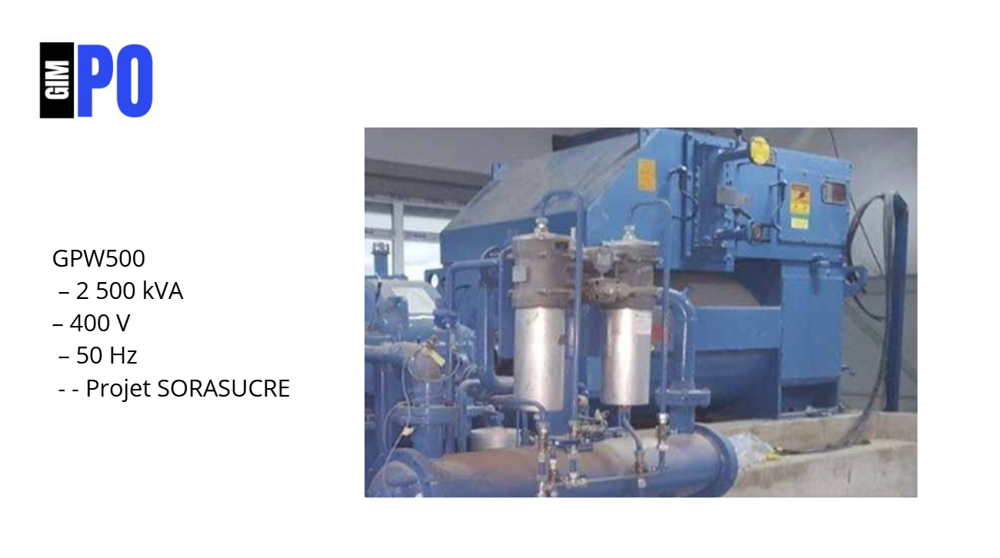
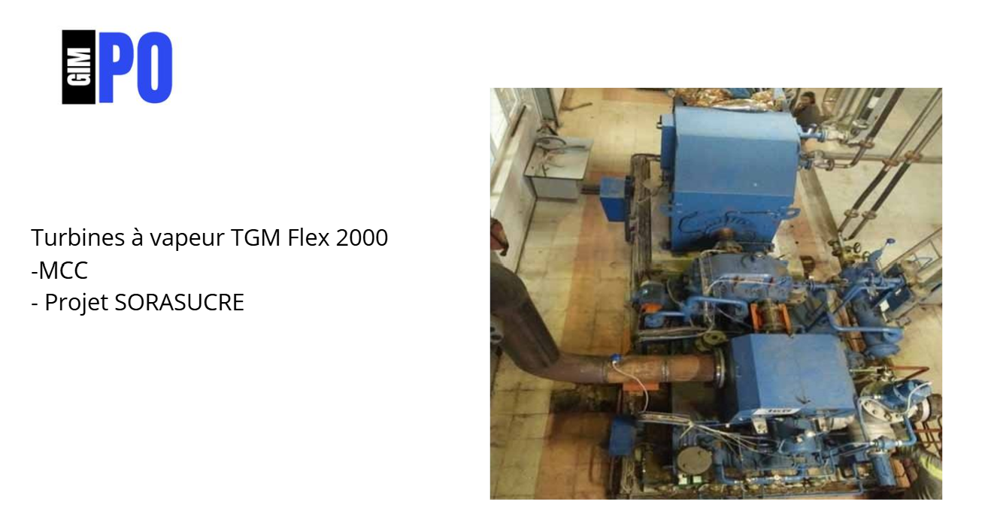
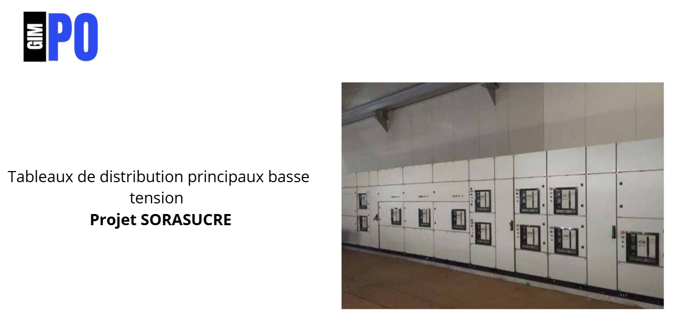
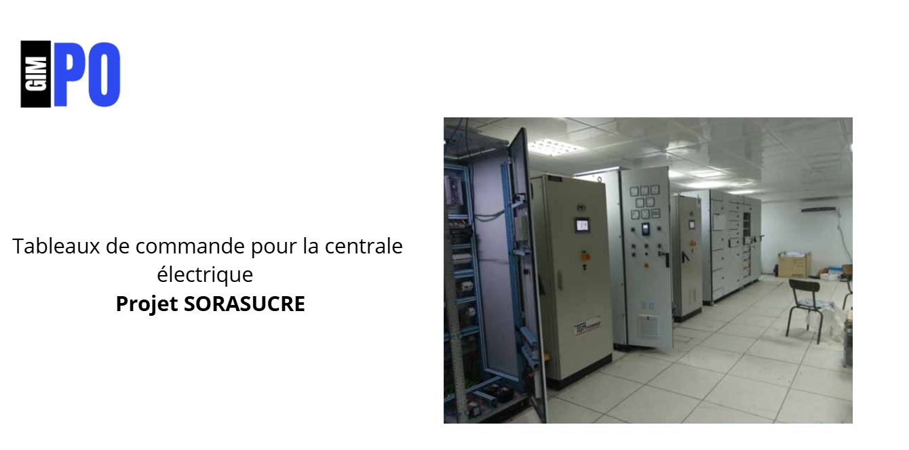
Localisation